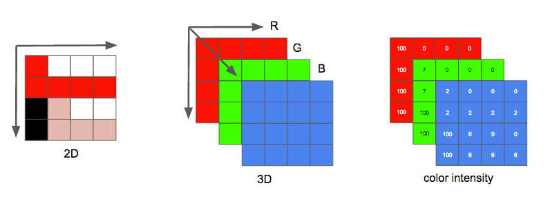
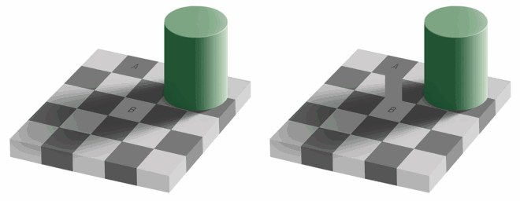
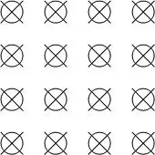
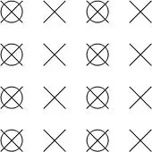
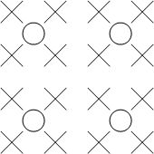
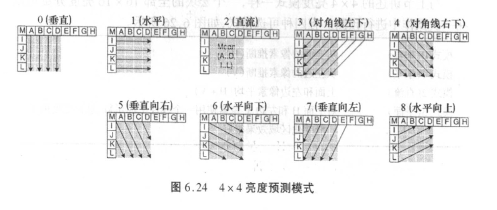
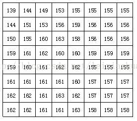
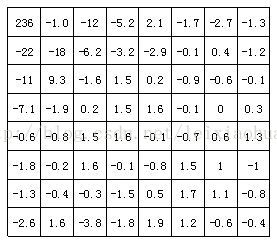
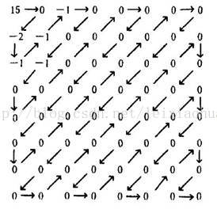
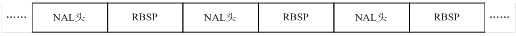

H.264五分钟入门
一、前言
随着人类文明的发展，信息的传递方式也发生了巨大的转变。从 1G 到 5G，信息的传递方式由文字、语音，逐渐过渡到现在的视频，对信息的需求越来越高。如果不对信息进行压缩，需要传输或存储的信息量将远远超过目前通信信道的传输、处理能力。而目前在视频领域主流的是 H.264 压缩标准，因此适当了解一下其压缩原理是很有必要的。
二、视频传输的基本过程
一段视频从一端传输到另一端，需要经过「采集--编码--传输--解码--显示」的过程。本文主要集中在「编码」这一过程上。
三、色彩空间
色彩空间是对颜色的一种描述方式，有很多种定义模型。最常见的就是 RGB 和 YUV 色彩空间。
RGB
在 RGB 色彩模式下，一幅图像可以看成由很多个像素点组成的二维矩阵，其中每个像素点的颜色均由 red、green、blue 三原色以不同强度叠加而成。例如，一个红色像素是由一个强度最大的红色及强度为 0 的绿色和蓝色组成。

一般而言，三个颜色分量均由 8bit 的数值表示，称为位深。因此每个像素占用空间大小为 $ 8 \times 3=24bit $。一段帧率是 15fps，分辨率是 480x240，时长一小时的视频占用空间将达到 $8\times3\times480\times240\times15\times3600=17.38G$。
YUV
研究表明，相比于颜色，人眼对亮度变化更为敏感。请看以下左图，A 和 B 颜色是否相同，右图呢？

由于色度对主观感觉影响不大，因此可采用一种色彩空间，去除适当的色度冗余数据，达到压缩的目的。
YUV色彩模型将亮度和色度分开，也称为 YCbCr 模型，其中 Y 是亮度（luma），Cb是蓝色色度（chroma blue），Cr是红色色度（chroma red）。其和 RGB 的转换公式如下： $$ \begin{cases} Y & = & 0.299R + 0.587G + 0.114B \\\ Cb & = & 0.564(B - Y) \\\ Cr & = & 0.713(R - Y) \end{cases} $$
$$ \begin{cases} R & = & Y + 1.402Cr \\\ B & = & Y + 1.772Cb \\\ G & = & Y - 0.344Cb - 0.714Cr \end{cases} $$
YUV 常见的有三种采样格式：
4:4:4
这种格式下，三个分量占一样的比重，也就是每个像素各采集一个Y、U、V分量。用叉表示 Y，用圆圈表示 UV，如图所示：

假如图像像素为：
[Y0 U0 V0]、[Y1 U1 V1]、[Y2 U2 V2]、[Y3 U3 V3]
那么采样的码流为：
Y0 U0 V0 Y1 U1 V1 Y2 U2 V2 Y3 U3 V3
最后映射出的像素点依旧为
[Y0 U0 V0]、[Y1 U1 V1]、[Y2 U2 V2]、[Y3 U3 V3]
若依旧使用 8 位的位深，每个像素占用空间依旧为 $ 8 \times 3=24bit $，可见这种采样方式并没有节省空间。
4:2:2
YUV 4:2:2 采样，意味着 UV 分量是 Y 分量采样的一半。如图所示：

假如图像像素为：
[Y0 U0 V0]、[Y1 U1 V1]、[Y2 U2 V2]、[Y3 U3 V3]
那么采样的码流为：
Y0 U0 Y1 V1 Y2 U2 Y3 V3
其中，每采样过一个像素点，都会采样其 Y 分量，而 U、V 分量就会间隔一个采集一个。 最后映射出的像素点为
[Y0 U0 V1]、[Y1 U0 V1]、[Y2 U2 V3]、[Y3 U2 V3]
可以看到，第一和第二像素点共用了 U0、V1 分量，第三和第四个像素点公用了 U2、V3 分量，这样就节省了图像空间。平均每个像素使用 $8\times4\div2=16bit$，相比 YUV444 和 RGB，节省了三分之一的空间。
4:2:0
该采样模式下，在每一行扫描时，只扫描一种色度分量（U 或者 V），和 Y 分量按照 2 : 1 的方式采样。比如，第一行扫描时，YU 按照 2 : 1 的方式采样，那么第二行扫描时，YV 分量按照 2:1 的方式采样。对于每个色度分量来说，它的水平方向和竖直方向的采样和 Y 分量相比都是 2:1。如图所示：

假设图像像素为：
[Y0 U0 V0]、[Y1 U1 V1]、 [Y2 U2 V2]、 [Y3 U3 V3]
[Y5 U5 V5]、[Y6 U6 V6]、 [Y7 U7 V7] 、[Y8 U8 V8]
那么采样的码流为：
Y0 U0 Y1 Y2 U2 Y3 Y5 V5 Y6 Y7 V7 Y8
其中，每采样过一个像素点，都会采样其 Y 分量，而 U、V 分量就会间隔一行按照 2 : 1 进行采样。 最后映射出的像素点为：
[Y0 U0 V5]、[Y1 U0 V5]、[Y2 U2 V7]、[Y3 U2 V7]
[Y5 U0 V5]、[Y6 U0 V5]、[Y7 U2 V7]、[Y8 U2 V7]
可以看到，四个 Y 分量是共用了一套 UV 分量，而且是按照 $2\times2$ 的小方格的形式分布的。平均每个像素占用 $8\times6\div4 = 12bit$，空间更加节省。
四、H.264视频压缩过程简介
视频采集
当现实中的场景通过摄像头被记录下来时，得到的是一组 YUV 格式的图像帧。对这些帧进行采样且采样频率高于 16 帧/秒时，由于人眼的视觉暂留原理，看到的就是一个连续的视频。采样频率越高，视频就越流畅，反之就越卡顿。但更高的采样频率带来的是更大的数据容量，如果要进行存储，对硬盘的容量和写入速度有很高的要求；如果进行网络传输，则需要更大的带宽。所以需要对视频进行压缩，以达到对人的视觉效果和计算机硬件要求的平衡。
宏块划分
视频是基于帧的，所以对当前的某一帧进行编码时，需要先对其划分为更小的块，称为宏块，简称块。比如某一帧长宽比是 1280x720，就可以分为 160x90 个 8x8 的小块，然后对每一个块逐个处理。
运动估计
前面计算过，如果使用 RGB 或者 YUV444 模型直接存储视频，一段帧率是 15fps，分辨率是 480x240，时长一小时的视频占用空间将达到 17G，如果改为 YUV420，可节省一半空间，但仍然不够理想，对于磁盘存储或在网络上传输都是巨大的压力。
人们发现，和计算机程序运行时的空间局部性、时间局部性一样，视频也有空间局部性和时间局部性。具体来说就是：
- 在视频的一帧中，大部分情况下，每个像素点周围的像素总是跟它很接近或相同；
- 在连续的两幅或多幅帧中，相同的像素点总是在一个较小的区域内移动；
因此，H.264 的目标就是对视频数据进行压缩，去除空间冗余及时间冗余，只存储、传输必要的信息。由此引出两种压缩方式：帧内预测及帧间预测。所谓预测，就是利用已经编码过的块和差值，来预测当前的块。
帧内压缩
帧内预测，即当前块的预测只依赖于当前帧内已经编码过的块。当块为 4x4 大小时，共有 9 种预测模式：

当块大小为 16x16 时，共有 4 种预测模式：
- 模式0（垂直）：从上面的像素推断（H）
- 模式1（水平）：从左边的像素推断（V）
- 模式2（直流）：上面和左边像素平均（H+V)
- 模式3（平面）：对H和V使用一个线性平面函数，这在亮度的平滑变化区域上效果很好。
还有一种 8x8 色度预测模式和上面这个类似，不再赘述。
使用帧内预测时，需要将每个块的预测模式进行编码，发送给解码器。
帧间预测
帧间预测，当前块的预测依赖于先前已经编码过的帧中的块。因为相邻的两帧中有可能因为物体的运动而产生偏差，所以需要对每个像素点的位移进行编码，这样才能根据参考帧中的块 + 差值 + 像素位移矢量来复原出当前块。其过程是：
- 在参考帧中寻找与当前宏块匹配的 16x16 像素区域，称为「搜索域」。并找到一个与当前块差值最小的参考块，这样就找到了该宏块的运动矢量。这个过程也称为运动估计。
- 将当前宏块减去最佳匹配宏块得到的差值，和他们相对的运动矢量一起编码进行传输，这就是运动补偿的过程。在解码器中，根据该矢量去找到参考宏块，然后加上差值就可以复原当前块。
但由此带来的问题是，如果块选择过大，会导致额外编码过多，甚至超过了图像原大小。所以通常采用的办法是对图像中平缓的区域采用大块，细节丰富的区域采用小块。
通常编码器将帧分为 3 种类型：I(Intra)帧，B(Bidirection Prediction)帧和 P(Prediction)帧。其中 I 帧只使用帧内预测模式，B 和 P 帧使用帧间预测模式。
变换编码
绝大多数图像都有一个共同的特征：平坦区域和内容缓慢变化区域占据一幅图像的大部分，而细节区域和内容突变区域则占小部分。也可以说，图像中直流和低频区占大部分，高频区占小部分。 这样，空间域的图像变换到频域或所谓的变换域，会产生相关性很小的一些变换系数，并可对其进 行压缩编码，即所谓的变换编码。
目前存在的变换大体可分为两类：块变换和图像变换。块变换有 K-L变换、SVD矩阵奇异值分解、傅里叶变换和离散余弦变换(DCT)；图像变换有离散小波变换(DWT)等。本文简要介绍 DCT 变换：
DCT 变换，是将 NxN 的样本 $X$ 变成 NxN 的系数矩阵 $Y$。变换过程为 $Y=AXA^T$。其中 $X$ 是样本矩阵，$Y$ 是系数矩阵，$A$ 是 NxN 的变换矩阵。$A$ 中各个元素如下: $$ A\_{ij}=C\_icos\frac{(2j+1)i\pi}{2N} $$ 其中 $$ C\_i=\sqrt{\frac{1}{N}}(i=0) \\\ C\_i=\sqrt{\frac{2}{N}}(i!=0) $$ 下图给出一个实际8*8的图像块例子，图中的数字代表了每个像素的亮度值。从图上可以看出，在这个图像块中各个像素亮度值比较均匀，特别是相邻像素亮度值变化不是很大，说明图像信号具有很强的相关性。

下图是上图中图像块经过DCT变换后的结果。从图中可以看出经过DCT变换后，左上角的低频系数集中了大量能量，而右下角的高频系数上的能量很小。

量化
宏块经过变换后，主要能量都集中在矩阵左上角低频系数上。由于人的眼睛对图像的低频特性比如物体的总体亮度之类的信息很敏感，而对图像中的高频细节信息不敏感，因此在传送过程中可以少传或不传送高频信息，只传送低频部分。量化过程通过对低频区的系数进行细量化，高频区的系数进行粗量化，去除了人眼不敏感的高频信息，从而降低信息传送量。因此，量化是一个有损压缩的过程，而且是视频压缩编码中质量损伤的主要原因。
量化器的作用是将处于取值范围 $X$ 中的信号映射到一个较小的取值范围 $Y$ 中，量化后的信号比原信号所需的比特数少，达到了压缩的目的，输出一般是一个包含少数非零值和大量零值得稀疏矩阵。但量化是一个不可逆的过程，所以量化算法的选取要慎重，若映射前后差异较大，会导致视频失真。
最简单的量化方法是将实数四舍五入映射到整数域上。
熵编码
熵编码是因编码后平均码长接近信源熵而得名。其基本原理是对信源中出现概率大的符号赋予短码，概率小的符号赋予长码，从而获得统计意义上较短的平均码长。其实现通常有哈夫曼编码，算数编码，游程编码等。
DCT系数经过量化之后大部分经变为0，而只有很少一部分系数为非零值，此时只需将这些非0值进行压缩编码即可。首先需对量化器输出的交流系数进行 z 形扫描，如下图所示。目的是将二维矩阵变为一维，并将一维序列进行游程编码，从而达到压缩目的。

五、H.264 码流结构
完成所有这些步之后，我们需要将压缩过的帧和内容打包进去。需要明确告知解码器编码定义，如颜色深度，颜色空间，分辨率，预测信息（运动向量，帧内预测方向），配置，层级，帧率，帧类型，帧号等等更多信息。
结构
H.264标准在功能上分为两层：VAL 层和 NAL 层：
-
VCL（Video Coding Layer），视频编码层，包括核心压缩引擎和块，宏块和片的语法级别定义，设计目标是尽可能地独立于网络进行高效的编码；
-
NAL（Network Abstraction Layer），网络抽象层，负责将VCL产生的比特字符串适配到各种各样的网络和多元环境中，覆盖了所有片级以上的语法级别；
组成
在 VCL 数据传输或存储之前，这些编码的 VCL 数据，先被映射或封装进 NAL 单元(以下简称 NALU，Nal Unit) 中。每个 NALU 包括一个原始字节序列负荷(RBSP, Raw Byte Sequence Payload)、一组对应于视频编码的 NALU 头部信息。RBSP 的基本结构是:在原始编码数据的后面填加了结尾 比特。一个 bit“1”若干比特“0”，以便字节对齐。

每个 NALU 的前面，会有一个起始码，标识这是一个 NALU 的开始。其值为 00 00 01 或 00 00 00 01。
NAL 头占 1 字节，其意义如下：
| forbidden_zero_bit | nal_ref_idc | nal_unit_type |
`--------------------+-------------+---------------`
| 1 bit | 2 bit | 5 bit |
- forbidden_zero_bit：禁止位，当网络发现 NALU 中有错误时，可将该位置1，以便接收方丢弃该单元；
- nal_ref_idc：重要性指示位，标志该 NAL 单元用于重建时的重要性，值越大越重要；
- nal_unit_type：NALU 类型，具体含义参考以下表格：
| nal_unit_type | RBSP 类型 |
|---|---|
| 0 | 未使用 |
| 1 | 不分区，非 IDR 图像的片 |
| 2 | 片分区A |
| 3 | 片分区B |
| 4 | 片分区C |
| 5 | IDR图像中的片 |
| 6 | 补充增强信息单元（SEI） |
| 7 | 序列参数集（SPS） |
| 8 | 图像参数集（PPS） |
| 9 | 分界符 |
| 10 | 序列结束 |
| 11 | 码流结束 |
| 12 | 填充数据 |
| 13-23 | 保留 |
| 24-31 | 未使用 |
帧与 NALU
一帧图片经过 H.264 编码器之后，就被编码为一个或多个片（slice），而装载着这些片的载体，就是 NALU 了。 一帧图片至少有一个或多个片，片都是由 NALU 装载并进行网络传输的。但是这并不代表 NALU 内就一定是切片，这是充分不必要条件，因为 NALU 还有可能装载着其他用作描述视频的信息。
切片中主要承载宏块经过熵编码后输出数据，其作用主要是防止误码的扩散和传输。主要有以下几种类型：
- I-slice，只包含 I 宏块，即使用帧内预测生成的宏块。多个 I-slice 组成一幅 I 帧；
- B-slice，可包含 B 宏块或 I 宏块，B 宏块需利用其之前和之后的两帧进行帧间预测。多个 B-slice 组成一幅 B 帧；
- P-slice，可包含 P 宏块或 I 宏块，P 宏块需利用其之前的一帧进行帧间预测。多个 P-slice 组成一幅 P 帧；
- SP-slice，可包含 P 宏块或 I 宏块，是 P-slice 的一种特殊类型，用于不同码流之间的切换，在扩展档次中使用；
- SI-slice，包含了一种特殊的 SI 宏块，是 I-slice 的一种特殊类型，也用来在扩展档次中进行码流切换；
六、参考文献：
《新一代视频压缩编码标准--H.264/AVC》毕厚杰主编
https://github.com/leandromoreira/digital_video_introduction
https://blog.csdn.net/leixiaohua1020/article/details/28114081